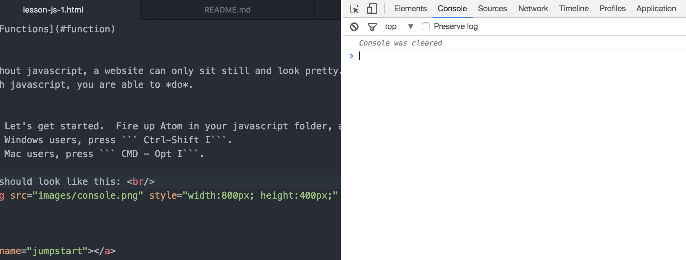

[Home](index.html)
## Juggling Javascript: Part One
[<< Previous Lesson](lesson-htmlcss-3.html)&nbsp;&nbsp;|&nbsp;&nbsp;[Next Lesson >>](lesson-js-2.html)
If HTML is the skeletal structure, and CSS is the clothes, then
Javascript is the meat and muscles of web development. <br/>
Without Javascript, a website can only sit still and look pretty.
With Javascript, you are able to *do*.
In this lesson, <br/> we will learn the magic of javascript.
To get started, open your atom editor, and start the console.
#### Concepts
* [Printing](#jumpstart)
* [Variables](#variable)
* [Loops And Conditionals](#loop)
* [Functions](#function)
Without javascript, a website can only sit still and look pretty.
With javascript, you are able to *do*.
Ok, Let's get started. Fire up Atom in your javascript folder, and open your console. <br/>
For Windows users, press ``` Ctrl-Shift-I```.
For Mac users, press ``` Cmd-Opt-I```.
It should look like this: <br/>

<a name="jumpstart"></a>
#### Lesson 1: Moving Those Muscles. Let's Hack
Its an unspoken rule for programmers learning programming
to print out a line symbolizing a machine's break into the real world. <br/>
So let's go to the Chrome Developer's Tool.
First, right click anywhere on the page, and then
click on the "Inspect".
Then, once the developer tools pops up,
you can click on the "Console" tab.
```javascript
console.log("I'm Alive! Hello World")
```
Let's break this down. We'll be doing a lot of reading out loud.
```javascript
console.log() // Console refers to a console "object"
// This is a function that takes in values within its parenthesis
"I'm Alive " // This is a String, or a collection of characters, that is a data-type
```
3 things here: <br/>
1. Object: For now, just know that its "Something." In javascript, objects <br/>
2. Function: It does something. In this case, its attached to a "console" object and can only be used that way. It also <br/>
3. String: a Data-type. In the next lesson, we will see several different data types
We will revisit these very, very soon.
For now, just remember that ```console.log()``` is a very useful function. It will
help you print out a lot of things, and help you understand your code.
#### Lesson 2: Variables<a name="variable"></a>
Variables are basically data that you name yourself. Variables can contain data types (Integer, String [Ha!], Booleans),
Objects (console, document, etc...)
and even functions. The variable creation process is as follows:
+ declaration keyword "var"
+ name of variable - human readable name. Can be called in your code
+ value of variable - Program callable value. Can be called through your variable name
For example, type the following into your console, one line at a time:
Try to read it like so:
```javascript
var i = 0; // I've assigned value of ( 0 ) to variable i
var message = "Hello World"; // I've assigned a String "Hello World" to message
console.log("I have just assigned variable i the value " + i);
/* You can assign a variable with a function! */
var copyConsoleLog = console.log();
copyConsoleLog(message);
```
#### Lesson 3: Loops And Conditionals<a name="loop"></a>
Loops allow a programmer to not repeat lines.
Imagine if you needed to print "I'm Alive!" 1000 times.
Without Loops, that would be 1000 lines of code.
With a loop, it would look like this:
```
for (_____)
{
// Code Block Here
}
and
```
The for statement will contain 3 parameters that determine how many
times to loop for. The following is a concrete example:
```
for (var i = 0; i < 1000; i++){
console.log("I'm Alive! Its the" + i + "nth
print");
}
```
Breaking this down, in javascript:
First, we create a counter and set it to 0.
Second, we state the *Condition* that the counter i must be less than 1000.
Third, we have the increment, where you set how much you update i by each loop
(we chose 1)
By putting i++, we are telling the program to increment i by 1 for each
iteration of the loop.
In Summary, this should loop 1000 times, starting
at i = 0, and then ending at i = 999, where at the end it will reach 1000 and not run the code block within the sections
Now's a good time to pop open exercise #1 and attempt the exercise! <br/>
(Highly recommended breakpoint to consolidate what you've learned)
Now to Dive into code. Remember how HTML are just nodes of data? <br/>
(If not, take a review [here](https://google.com)) <br/>
When you have classes of similar elements, you can use javascript to grab
the data and print it out. You can do cool things, such as display each node's inner text, or even create HTML nodes and attach them.
Printing out html node information.
Enter this into the console in the developer tools.
```
var nodes = document.getElementsbyClassName("box");
var arrayLength = array.length() // .length() is a function call as a property of arrays
for (int i = 0; i < arrayLength; i++ ){
console.log(nodes[i]);
}
```
Analyzing the above, we should be reading it as so:
<a name="function"></a>
___
___
#### Lesson 4: Functions
Functions are a powerful way to call a portion of code.
Say you want to print out something.
```javascript
var funFunction = function(){
// Enter code you want to call
}
// or
function funFunction( ){
}
```
Parameters are what you put into things
Functions
[<< Previous Lesson](lesson-htmlcss-3.html)&nbsp;&nbsp;|&nbsp;&nbsp;[Next Lesson >>](lesson-js-2.html)